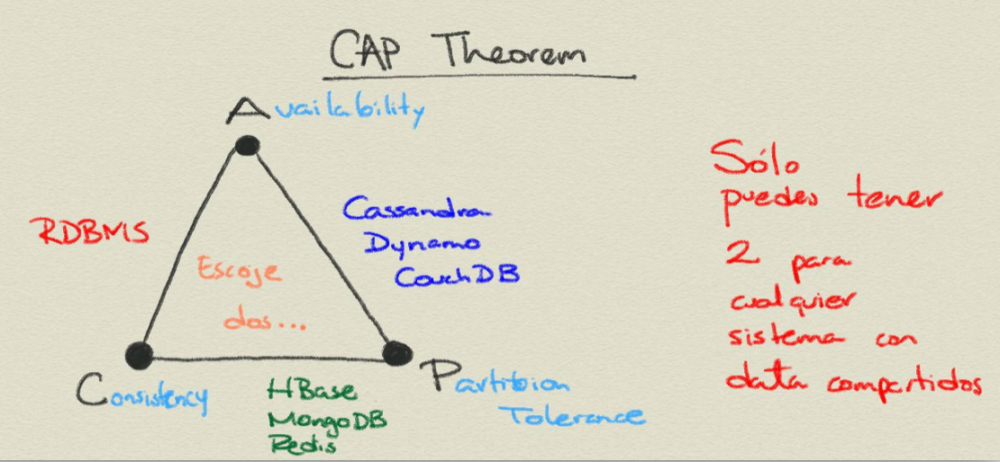
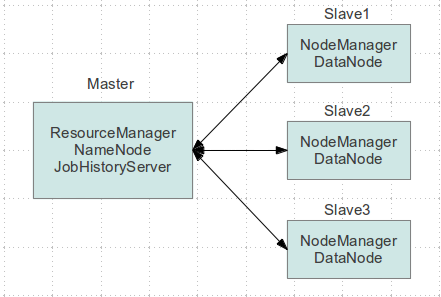
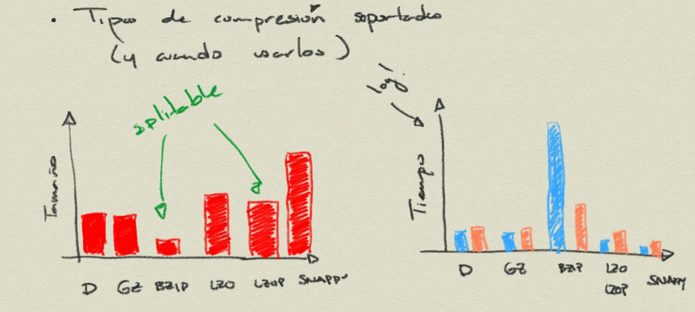

Lecture 4
Adolfo De Unánue
adolfo.deunanue@itam.mx
Docker
Obtener la imagen
docker pull nanounanue/docker-hadoop
Ejecutar un contenedor
docker run -ti --rm \ -e "AUTHORIZED_SSH_PUBLIC_KEY=$(cat ~/.ssh/id_rsa.pub)" \ -v /home/nano/tmp/docker-hadoop-data/:/home/hduser/hdfs-data/ \ -v /home/nano/tmp/docker-hadoop-logs/:/srv/hadoop/logs/ \ -p 2122:2122 -p 2181:2181 -p 39534:39534 -p 9000:9000 \ -p 50070:50070 -p 50010:50010 -p 50020:50020 -p 50075:50075 \ -p 50090:50090 -p 8030:8030 -p 8031:8031 -p 8032:8032 \ -p 8033:8033 -p 8088:8088 -p 8040:8040 -p 8042:8042 \ -p 13562:13562 -p 47784:47784 -p 10020:10020 -p 19888:19888 -p 8000:8000 \ nanounanue/docker-hadoop /bin/zsh
Contenedor con Hadoop
docker run -ti --name hadoop_pseudodistribuido \ -e "AUTHORIZED_SSH_PUBLIC_KEY=$(cat ~/.ssh/id_rsa.pub)" \ -v /home/nano/tmp/docker-hadoop-data/:/home/hduser/hdfs-data/ \ -v /home/nano/tmp/docker-hadoop-logs/:/srv/hadoop/logs/ \ -p 2122:2122 -p 2181:2181 -p 39534:39534 -p 9000:9000 \ -p 50070:50070 -p 50010:50010 -p 50020:50020 -p 50075:50075 \ -p 50090:50090 -p 8030:8030 -p 8031:8031 -p 8032:8032 \ -p 8033:8033 -p 8088:8088 -p 8040:8040 -p 8042:8042 \ -p 13562:13562 -p 47784:47784 -p 10020:10020 -p 19888:19888 \ -p 8000:8000 \ nanounanue/docker-hadoop
Conectarse al contenedor
ssh hduser@localhost -p 2122
Navegador Web
Apache Hadoop
¿Por qué?
- Aunque la capacidad de los discos ha aumentado considerablemente, la velocidad de los mismos no lo ha hecho igual.
- Los discos actuales de
1 Tb, tardan en leerse completos a100 Mb/scerca de dos a tres horas. - Podemos paralelizar las fuentes en varios discos.
- Para leerla simultáneamente
- Con varios discos, la probabilidad de falla aumenta.
- Los discos actuales de
- Otro problema es la distribución ¿Cómo combinas varios
file systems?
¿Qué es?
- Sistema confiable (realiable) de almacenamiento compartido y de análisis.
- Almacenamiento: HDFS
- Análisis: MapReduce
¿Cómo?
MapReducees un sistema de procesamiento batch- Permite correr queries contra toda tu base de datos
- Pero el resultado puede tardar minutos, horas, etc…
- No permite tener a un humano sentado ahí para retroalimentar.
¿Cómo?
- Ahora, gracias a
YARN(ver más adelante) tenemos diferentes tipos de procesamiento:- SQL Interactivo:
Impala,Hive,Tez. - Iterativos:
Spark. - Procesamiento de flujos:
Storm,Spark Streaming. - Búsquedas:
Solr.
- SQL Interactivo:
¿Por qué no otros sistemas?
- ¿Por qué no usar un
PostgreSQLcon muchos discos, muy pimpeado?- El problema viene del tiempo que toma mover la cabeza del disco a otro lugar del disco para leer o escribir datos (seek time).
- ¿Cuál es la latencia de la operación?
- El problema viene del tiempo que toma mover la cabeza del disco a otro lugar del disco para leer o escribir datos (seek time).
- ¿Por qué no Grid?
- Por ejemplo, cosas de
HPCque usanMPI.- Son intensivos en CPU.
- Pero si hay que mover cientos de gigabytes, la transferencia de datos se vuelve un problema.
- Basicamente, en que
Hadoopopera con data locality.
- Basicamente, en que
- Por ejemplo, cosas de
Componentes de Apache Hadoop
- MapReduce Modelo de procesamiento batch de datos distribuido y paralelo.
- HDFS Sistema de archivos (file system) distribuido.
- Pig Capa de abstracción encima de
MapReduce. Utiliza Pig Latin un lenguaje de flujo de datos- Como
dplyr
- Como
- Hive (Hadoop InteractiVE) Es un lenguaje parecido al
SQL:HQL, para ejecutar queries sobre elHDFS. - HBase Base de datos distribuida orientada a columnas.
- Depende de
Zookeeper.
- Depende de
- Impala Lenguaje Interactivo parecido al
SQL, pero mucho más rápido deHIVEdebido a su arquitectura MPP.
Componentes de Apache Hadoop
- Zookeeper Sistema distribuido de coordinación.
- Sqoop Herramienta para mover datos entre
RDBMyHDFS. - Flume Servicio para recolectar, agregar y mover grandes cantidades de datos entre máquinas individuales y el
HDFS. - Oozie Sistema de workflow, se usa para coordinar varios jobs de MapReduce.
- Mahout Biblioteca de Machine Learning.
- Ver la carpeta
docs.
- Ver la carpeta
- Ambari Simplifica el aprovisionamiento, gestión y monitoreo de un cluster de Hadoop.
- Avro Formato de serialización y de persistencia de datos.
- Entre otros…
HDFS : Hadoop File System
HDFS
- Sistema de almacenamiento distribuido.
- Namenode
->Master - Datanode
->Slaves
- Namenode
Ventajas
- Archivos muy grandes
- write once, read many times.
- Hardware normal
Desventajas
- Acceso a los datos de baja latencia.
- Muchos archivos pequeños.
- Muchas escrituras, modificaciones
Tamaño del bloque
- Cada file system define un tamaño de bloque, el cual es la cantidad mínima de datos que puede escribir o leer.
- Típicamente son de
kb.
- Típicamente son de
- En
HDFS, el bloque es de128 Mbpor default.- Es el concepto fundamental, no el archivo.
Namenode
- Gestiona el filesystem
- Mantiene el árbol del filesystem.
- Mantiene los
metadatosde todos los archivos y carpetas del árbol. - Esta información se guarda en disco en dos archivos:
namespace imageedit log
- Indica a los datanodes realizar tareas de bajo nivel de
I/O. - Book Keeper
- División de archivos en bloques (¿Cómo?)
- En qué datanode (¿Quién?)
- Monitorea.
- Uso intensivo de
RAMy deI/O. - Si se cae el
HDFSno puede ser usado- Hasta la versión
1.xel single point of failure, en Hadoop 2 se incorporó la característica de HIgh Availability. - Su caída puede causar la pérdida total de los datos.
- Hasta la versión
Namenode
- Hadoop proveé de dos formas de aliviar esta situación:
- Respaldos: Se puede configurar al namenode para que escriba su estado a varios filesystems.
- Secondary Namenode
Namenode

Datanode
- Lee y escribe los
HDFSblocks y los convierte en archivos del FS local. - Se comunica con otros datanodes para la replicación de los datos.
- Pueden realizar caching de bloques.
Datanode

Secondary Name Node
- Como el namenode sólo hay uno por cluster.
- No es un namenode.
- Evita que el
edit logcrezca mucho. - No recibe ni guarda cambios en tiempo real del
HDFS.- Va atrás del namenode.
- Sólo toma snapshots de la metadata.
Línea de comandos
- Hay muchas maneras de conectarse y usar el
HDFS. La línea de comandos es una de ellas.- Y espero que ya sepan que es de las más útiles y eficientes.
- Ayuda:
hadoop fs -help
Línea de comandos
hadoop fs -cmd <args> hadoop fs -ls hadoop fs -mkdir hadoop fs -copyFromLocal hadoop fs -copyToLocal hadoop fs -put archivo archivo_hdfs hadoop fs -get archivo_hdfs hadoop fs -cat archivo_hdfs hadoop fs -cat archivo_hdfs head hadoop fs -tail archivo_hdfs hadoop fs -rm archivo_hdfs
Modo Pseudodistribuido
- Crea una imagen sin Hadoop corriendo, vamos a explicar que significa pseudodistribuido.
Ejercicio
- Crea una imagen con Hadoop corriendo.
- Conéctate con el usuario
hduser. - Verifique que
aliastiene definido el usuariohduser.- Usa el comando
alias.
- Usa el comando
- Crear una carpeta
ufoen elHDFSy suba los archivos deufoa la carpeta recién creada.- Descomprime los archivos antes de subirlos
- Crea un script para esta tarea, llámalo
ufo_hdfs.sh.
- Crear una carpeta
gdelten elHDFSy suba los archivos degdelta esta carpeta.- Descomprime los archivos antes de subirlos
- Crea un script para esta tarea, llámalo
gdelt_hdfs.sh.
- Muestra las carpetas en la línea de comandos.
- Modifica los usuarios y permisos del HDFS ¿Cómo crees que se haga?
- Muestra las carpetas en la vista web.
YARN
YARN
- La infraestructura de Hadoop
0.xy1.xera monolítica, por eso fue rediseñada. YARN: Yet Another Resource Negotiator.- La gestión de recursos es extraída de los paquetes de
MapReducepara que puedan ser utilizadas por otros componentes. - Aportaciones
- Escalabilidad.
- Compatibilidad con
MapReduce. - Mejoras en la gestión del cluster.
- Soporte para otros modelos de programación (además de
MapReduce).- Graph processing
- Message Passing Interface (MPI).
- Soporte para procesamiento real-time o near real-time.
MapReducees batch-oriented.
- Agilidad.
YARN
- Se dividieron las dos responsabilidades del JobTracker:
- Gestión de recursos (Resource Management)
- Asignación y vigilancia de trabajos (Job scheduling-monitoring)
- La idea es tener un ResourceManager global y un NodeManager por nodo esclavo, los cuales forman un sistema para la administración de aplicaciones distribuidas.
- El ResourceManager tiene dos componentes principales:
- Scheduler: Asigna los recursos para las aplicaciones (pluggeable).
- Application Manager: Responsable de aceptar las solicitudes de trabajos, negociando al principio para ejecutar el Application Master específico y provee un servicio de reinicio, por si el Application Master falla.
- En cada nodo:
- El Application Master: Negocia sus recursos con el Scheduler,
monitorea sus avances y reporta su estatus.
- El NodeManager es el responsable de los contenedores, monitorear el uso de recursos y reportar todo al ResourceManager.
Arquitectura MapReduce Hadoop 1.x

Arquitectura Hadoop 2.x

Cambios 1.x -> 2.x

Multiparadigma en Hadoop 2.x

Procesamiento
Tipos
- MapReduce
- Spark
- Impala
MapReduce en Hadoop
- Principal framework de ejecución de
Apache Hadoop. - Inspirado en las operaciones MAP y REDUCE de los lenguajes funcionales.
- Modelo de programación para proceso de datos distribuido y paralelo.
- Divide las tareas (jobs) en fases de mapeo y fases de reducción.
- Los desarrolladores crean tareas MapReduce para Hadoop usando datos guardados en el
HDFS.
MapReduce: Ventajas
- Fault-tolerant.
- Esconde los detalles de implementación a los programadores.
- Escala con el tamaño de los datos.
MapReduce
- Dos fases de procesamiento:
- key-value como Input y Output
- El programador especifica:
- Tipos de key-value
- Funciones:
MAPyREDUCE.
Una pequeña regresión…
map-reduce: Matemáticamente
map: (k1, v1) -> list(k2, v2)
mapMapea (aplica una función f) un conjunto de entrada de pares key-value a otro conjunto intermedio de key-values
map-reduce: Matemáticamente
reduce: (k2, list(v2)) -> list(k3, v3)
reduceAplica una función g a todos los valores (values) asociados a una llave (key) y acumula el resultado. Emite pares de key-values.
Python map
# Equivalente en for-loop
items = [1,2,3,4,5]
cuadrados = []
for x in items:
cuadrados.append(x**2)
print cuadrados
# Usando la funcion map(function, sequence) items = [1,2,3,4,5] print list(map((lambda x: x**2), items))
Python reduce
# Equivalente en for-loop
L = [1,2,3,4]
result = L[0]
for x in L[1:]:
result = result*x
print result
# Usando la funcion reduce(funcion, secuencia) print reduce((lambda x,y: x*y), [1,2,3,4])
Python map y reduce
a = range(1, 4) b = range(4, 9) c = range(9, 15) print "a -> %s, b -> %s , c -> %s" % (a, b, c) L1 = map(lambda x:len(x), [a,b,c]) print "L1 -> %s" % L1 L2 = reduce(lambda x, y: x+y, L1) print "L2 -> %s" % L2
MapReduce y map-reduce
- Básicamente es lo mismo, pero…
map,reduce(entre otras) son parte de lenguajes funcionales.MapReducees la aplicación de esta idea aplicada a problemas vergonzosamente paralelos.- Ver la carpeta
docspara el artículo de Google sobreMapReduce.
- Ver la carpeta
GNU Parallel
find ./data/books -type f | parallel -j0 egrep -i '\[\[:digit:\]\]' {} | awk '{s+=$1} END {print s}'
- ¿Puedes identificar las partes
mapyreduce? - Esto ya es un
MapReduce.
MapReduce en Hadoop
- A nivel programático:
- Data de entrada
- Programa MapReduce
- Configuración
- Subtareas:
mapyreduce
MapReduce: Mapper
- Hadoop divide la entrade de datos al job MapReduce en pedazos de tamaño fijo llamados input splits.
- Hadoop crea una tarea
mappara cada input split. mapescribe al file system local.- Si el
reducertiene éxito se borra la salida del mapper.
- Si el
Map only

MapReduce: Reducer
- La entrada es la salida de (posiblemente) todos los mappers.
- Estas se transmiten vía red al nodo donde corre el reducer.
- La salida se guarda en el
HDFS.
Map, One reduce

MapReduce

MapReduce: Combiner
- Es una medida de optimización.
- Es para ahorrar ancho de banda.
- Una especie de reducer local.
- No es parte (estrictamente) del MapReduce
- Por eso no lo había mencionado.
Ejercicio
- Diseñe el MapReduce para lo siguiente:
- Encontrar el máximo de un conjunto de datos.
- Encontrar el promedio y desviación estándar de unos datos.
- Encontrar el top 10 de una cantidad.
- Contar por grupo
Apache Haoop 2.x: YARN
Hello World!: Word count
Word count
- Es el ejemplo Hola Mundo de Apache Hadoop.
- No sólo eso, es el ejemplo que se utiliza en el trabajo seminal
- MapReduce: Simplified Data Processing on Large Clusters (2006).
- En la carpeta
docscomo ya había dicho.
- Solamente 1
Mapy 1Reduce.
Word count
- mapper
k1-> nombre de archivov1-> texto del archivok2-> palabrav2-> "1"
- reducer
k2-> palabra- list(v2) -> (1,1,1,1,1,1,…, 1)
Suma los "1" y produce una lista de
- k3 -> palabra
- v3 -> suma
Word count

Pseudocódigo
map (String key, String value)
for each word w in value
Emit(w, 1)
reduce (String key, Iterator values)
int wordcount = 0
for each v in values
wordcount += v
Emit(key, wordcount)
Mockup
- Ver los archivos
word_count.pyymapreduce.pyen la carpetamock.
chmod +x word_count.py python word_count.py
- Este es un ejemplo de mentiritas, no usa Apache Hadoop.
Pig
Pig
- Proyecto de Apache
- Abstracción encima de Hadoop
- Pig Latin compila a
MapReduce - En cierta forma Pig Latin es para analistas, data scientist y estadísticos.
MapReducees para programadores (aunque los data scientist deberían de poder hacerlo también)
- Pig Latin compila a
Pig
- Pig es un data flow programming language
- Es decir,
- Ejecuta paso a paso
- Cada paso es una transformación de datos
- En cambio
SQLes un conjunto de constraints que en conjunto definen el resultado buscado.
Pig
- ¿Qué cosas puede hacer?
joinssortsfiltersgroup by- User defined functions
UDF's
Pig
- ¿Qué cosas puedo hacer?
ETLs- Limpiar.
- Joins gigantes.
- Búsqueda en Raw.
Pig
- Componentes
- Pig Latin
Grunt- Local
- MapReduce
Pig compiler
Pig
- Es posible ejecutar también scripts de Pig Latin (terminación
.pig) sin entrar agrunt.
pig script_file.pig # Si quieren pasar parámetros pig -p var=bla/bla var2=bla/bla/bla script_file.pig
- Y usarse desde programas en
Javacon la clasePigServer.- Como una especie de
JDBC, pero para Pig Latin.
- Como una especie de
Pig: Building blocks
Fields
'Adolfo'
Tuplas
('Adolfo', 3, 8.17, 23)
Bags
{('Adolfo', 3, 8.17, 23), ('Paty', 3.14, 9, 'A')}
Ejercicio
- Crear una carpeta
ritaen elHDFS. - Agregar los siguientes archivos:
airports.csvplane_data.csvcarriers.csv
- Ejecutar
grunt.
# Pig latin puede ejecutar comandos del hdfs
cat rita/airports
# Especificando el separador (,) y el esquema (no es necesario)
airports = load 'rita/airports' using PigStorage(',') as (iata:chararray, ..., latitude:float, ...);
# Hasta este momento se ejecuta todo...
dump airports;
# El comando store guarda al HDFS y también ejecuta todo.
Ejercicio
a_imprimir = limit airports 5; por_estado = group airports by state; describe por_estado; explain por_estado; illustrate por_estado; # itera sobre cada elemento del bag conteo = foreach por_estado generate group count_star(airports); ordenados = order conteo by $1 desc; top_five = limit ordenado 5; unicos = distinct conteos; muestreo = sample por_estado 0.1; filtrados = filter conteos by substring(group, 0, 2) == 'W'; mayores = filter conteos by $1 > 50;
Ejercicio: Trucos del foreach
# Proyectar foreach airports generate iata, airport, country; # Expresiones posicionales # $1 -> iata # $3 -> city # $5 -> country # Rangos # ..country, iata..country, latitude.. # Tokenizar tokens = foreach lineas generate tokenize(linea); # Cada fila obtenida es un bag de palabras.
Pig: JOINS
- Cargamos fuente 1
- Cargamos fuente 2
- Unimos las fuentes (bags) mediante una llave
- Súper simple
Pig soporta inner joins (valor por omisión), left outer joins (y right también) y full outer joins.
fuentes_unidas = join fuente1 by (keys) [left|right|full outer] fuente2 by (keys);
Además Pig soporta cogroup además de los joins (el cogroup
preserva la estructura de las fuentes y crea tuplas por cada llave)
fuentes_unidas = cogroup fuente1 by (keys) fuente2 by (keys);
Pig: Ejemplo de JOINs y COGROUPs
# Fuentes de datos
mascotas: (dueño, mascotas)
----------------------
(Adolfo, tortuga)
(Adolfo, pez)
(Adolfo, gato)
(Paty, perro)
(Paty, gato)
amigos: (amigo1, amigo2)
----------------------
(Diana, Adolfo)
(Gabriel, Adolfo)
(Shanti, Paty)
COGROUP mascotas by dueño, amigos por amigo2;
---------------------------------------------
(Adolfo, {(Adolfo, tortuga), (Adolfo, pez), (Adolfo, gato)}, {(Diana, Adolfo), (Gabriel, Adolfo)})
(Paty, {(Paty, perro), (Paty, gato)}, {(Shanti, Paty)})
JOIN mascotas by dueño, amigos por amigo2;
-------------------------------------------
(Adolfo, tortuga, Diana)
(Adolfo, tortuga, Gabriel)
(Adolfo, pez, Diana)
(Adolfo, pez, Gabriel)
(Adolfo, gato, Diana)
(Adolfo, gato, Gabriel)
(Paty, perro, Shanti)
(Paty, gato, Shanti)
Aclaraciones sobre GROUP y FLATTEN
FLATTENelimina un nivel anidamiento
# Datos: # (Adolfo, (tortuga, pez, gato)) # (Paty, (perro, gato)) # FLATTEN eliminaría los bags internos (Adolfo, tortuga) (Adolfo, pez) (Adolfo, gato) (Paty, perro) (Paty, gato)
GROUP .. BYorganiza los bags en bags
# Siguiendo con los datos anteriores de mascotas
GROUP mascotas BY dueño;
# ( Adolfo, {(Adolfo, tortuga), (Adolfo, pez), (Adolfo, gato)} )
# ( Paty, {(Paty, perro), (Paty, gato)} )
- En cierto sentido
FLATTENyGROUP .. BYson operaciones inversas entre sí.
Tarea
Crear un wordcount para los archivos en data usando Pig
Hive
Hive
- Datawarehouse.
HQLes casi idéntico aSQL.- Proyecto de Apache.
- Estructura a diversos formatos.
- Queries.
- Acceso al
HDFSyHBASE. - Queries en tiempo real.
- Facilidad de uso.
Arquitectura de Apache Hive

Ejercicio: Crear RITA en Hive
CREATE EXTERNAL TABLE carriers( code STRING, description STRING ) COMMENT 'Códigos de carriers' ROW FORMAT DELIMITED FIELDS TERMINATED BY ',' LINES TERMINATED BY '\n' STORED AS TEXTFILE; CREATE EXTERNAL TABLE airports( iata STRING, airport STRING, city STRING, state STRING, country STRING, latitude FLOAT, longitude FLOAT ) COMMENT 'Códigos y localización de aeropuertos' ROW FORMAT DELIMITED FIELDS TERMINATED BY ',' LINES TERMINATED BY '\n' STORED AS TEXTFILE; CREATE EXTERNAL TABLE planes_data( tailnum STRING, type STRING, manufacturer STRING, issue_date STRING, model STRING, status STRING, aircraft_type STRING, engine_type STRING, year STRING ) COMMENT 'Datos de algunos aviones mencionados en RITA' ROW FORMAT DELIMITED FIELDS TERMINATED BY ',' LINES TERMINATED BY '\n' STORED AS TEXTFILE;
Ejercicio: Crear RITA en Hive
CREATE EXTERNAL TABLE rita( Year STRING, Month STRING, DayofMonth STRING, DayOfWeek STRING, DepTime STRING, CRSDepTime STRING, ArrTime STRING, CRSArrTime STRING, UniqueCarrier STRING, FlightNum STRING, TailNum STRING, ActualElapsedTime INT, CRSElapsedTime INT, AirTime INT, ArrDelay INT, DepDelay INT, Origin STRING, Dest STRING, Distance FLOAT, TaxiIn INT, TaxiOut INT, Cancelled INT, CancellationCode STRING, Diverted INT, CarrierDelay INT, WeatherDelay INT, NASDelay INT, SecurityDelay INT, LateAircraftDelay INT ) COMMENT 'Base de datos conteniendo los vuelos de 1987 a 2008' ROW FORMAT DELIMITED FIELDS TERMINATED BY ',' LINES TERMINATED BY '\n' STORED AS TEXTFILE LOCATION '/user/hive/rita';
Ejercicio: RITA y HIVE
-- ¿Se crearon bien las tablas? show tables; -- ¿Se cargó bien rita? select * from rita limit 5; -- Cargamos airports load data inpath 'hive/datawarehouse/rita/catalogs/airports.csv' overwrite into table airports; -- Probamos select * from airports where iata='SAN'; -- ¿Y si hacemos un JOIN? select * from rita join airports on (rita.Origin = airports.iata) limit 10; -- ¿Qué pasó?
Tarea
Crear un wordcount para los archivos en data usando Hive
Ejercicios
RITA, HIVE y PIG
register /home/hduser/hadoop-src/pig-0.12.0/contrib/piggybank/java/piggybank.jar;
define replace org.apache.pig.piggybank.evaluation.string.REPLACE;
define substring org.apache.pig.piggybank.evaluation.string.SUBSTRING;
define s_split org.apache.pig.piggybank.evaluation.string.Split;
define reverse org.apache.pig.piggybank.evaluation.string.Reverse;
airports = LOAD '/user/nano/rita_catalogs/airports.csv'
USING PigStorage(',')
AS
(iata:chararray,airport:chararray,city:chararray,
state:chararray,country:chararray,latitude:float,longitude:float);
fixed_airports = foreach airports
generate replace(iata, '"', ''),
replace(airport, '"', ''),
replace(city, '"', ''),
replace(state, '"', ''),
replace(country, '"', ''),
latitude, longitude;
store fixed_airports into '/user/pig/airports-fixed' using PigStorage(',');
RITA y HIVE: Joins
load data inpath 'pig_fixed/airports/part-m-00000' overwrite into table airports; -- ¿Y ahora? select * from airports where iata='SAN'; select * from rita join airports on (rita.Origin = airports.iata) limit 10;
Tarea: Pig y Hive
- Crear una tabla de RITA limpia (usando
PIGyHIVE) - Ejecutar dos exploraciones de las tareas de analítica de PostgreSQL,
uno usando
PIGy otro usandoHIVE.
¡Más ejercicios!
- Usando
RITA(lo que tengan cargado en su nodo), calcule:- Con
Pig:- El número de vuelos por aeropuerto.
- ¿Cuál es el más activo?
- Con
Hive:- Número de
kmpor avión. - ¿Cuál es el top 5?
- ¿Sería más fácil en
Pig?
- Número de
- Con
HCatalog
HCatalog
- Está incorporado a
Hivedesde la versión0.11. - Es una capa administrativa de tablas y almacenamiento que permite
que diferentes herramientas de procesamiento de datos (
Pig,MapReduce) puedan leer y escribir más fácilmente delHDFS. - Contiene una abstracción que presenta una vista relacional de los
datos contenidos en el
HDFS, asegurando que los usuarios no se preocupen dónde o en que formato están almacenados los datos.
HCatalog
- Utiliza el
DDLdeHive. - Provee interfaces de escritura y lectura para
Pig,MapReduceyHive. - Usa la línea de comandos para manejar la definición de los datos y metadatos.
HCatalogpresenta los datos de manera relacional.- Los datos son guardados en tablas y las tablas en bases de datos.
WebHCates la interfaz APIRESTdeHCatalog.
HCatalog: Flujo de datos
- Usuario 1 copia datos al HDFS
hadoop distcp file:///data/books/pg2047.txt hdfs://data/20140430/books hcat "alter table books add partition (ds='20140430') location 'hdfs://data/20140430/books'"
- Usuario 2 usa
Pigpara limpiar y preparar los datos.HCatalogmandará alJMSun mensaje de que la información está disponible.
A = load 'books' using HCatLoader();
B = filter A by date = '20140430';
...
store Z into 'procesados' using HCatStorer("date=20140430");
- Usuario 3 realiza cierta analítica
select col1, count(col3) from procesados where date = '201340430' group by col1;
HBase
CAP Theorem

Apache Sqoop
Apache Sqoop
- Herramienta para importar eficientemente data desde
RDBMSa Hadoop (HDFS, Hive, Hbase) y viceversa. - Soporta cualquier
RDBMSque tenga conexiónJDBC(PostgreSQL, MySQL, Oracle, Teradata, etc.). - Tiene soporte nativo para
MySQLyPostgreSQL.
Apache Sqoop

Ejercicio: RITA del tingo al tango
y
Apache Flume
Apache Spark
Oozie
Hue
Ejercicio: Armar un cluster
- El objetivo es reproducir el siguiente diagrama arquitectónico (por lo menos).

- Use
Vagrant,chefyberkshelf.
Compresores
Instalación
# Snappy sudo apt-get install libsnappy1 libsnappy-dev #LZO sudo apt-get install liblzo2-2 liblzo2-dev#+end_example
Tipos

Misceláneos
Tips
Reducees regularmente más intensivo en cuanto consumo de recursos queMap- Usa
Combiners. - Explora tus datos antes
- Como están distribuidos es muy importante.
- Quizá Hadoop no sea lo correcto.
- Usa
- En la vida real, instala desde una distribución: BigTop, Horton o Cloudera.
- Y
Vagrant
- Y
Small File Problem
Disclaimer
Algunas imágenes se tomaron de los libros Professional Hadoop Solutions de Wrox y de la página de Hortonworks. Las otras son mías.
Las tablas de la sección cluster de Hadoop, se tomaron de Hortonworks.